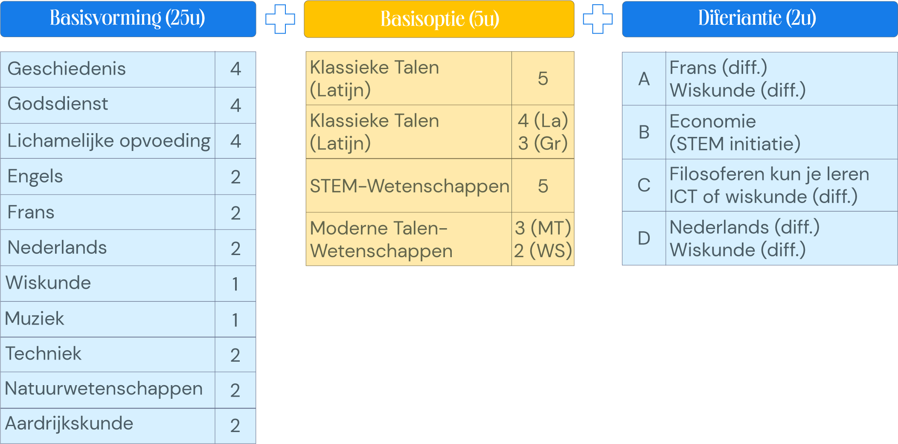

Lesuren

Wat uitleg bij de basisopties (2de jaar)
Leren en leven
Leerlingen onderzoeken hoe mensen door middel van taal tot een specifieke groep, (sub)cultuur behoren. Ze oefenen hun communicatieve vaardigheden in het Nederlands, Frans en/of Engels. Ze verkennen vormen van fictie. Ze onderzoeken ook natuur- en technisch-wetenschappelijke verschijnselen en ideeën. Ze ontdekken contexten waarin natuur- en technisch-wetenschappen een belangrijke rol spelen.
Basisoptie Klassieke Talen: Grieks-Latijn/ Latijn
Leerlingen onderzoeken de Romeinse en Griekse taal en cultuur via teksten. Ze gebruiken hun kennis over taal, cultuur en kunst om beter inzicht te krijgen in de waarden, geschie-denis en maatschappij van Grieken en Romeinen. Ze krijgen inzicht in de invloed van de Grieks-Romeinse beschaving en klassieke talen op de hedendaagse culturen.
Basisoptie STEM-wetenschappen
Leerlingen onderzoeken technisch-wetenschappelijke uitdagingen en leren ideeën omzetten in een prototype. Ze verkennen onderzoeks- en ontwerpmethoden. Ze ontdekken contexten waarin STEM een belangrijke rol speelt zoals mechatronica, ICT, levenswetenschappen, constructies en ruimtelijke ontwikkeling. (STEM = Science, Technology, Engineering & Mathematics)